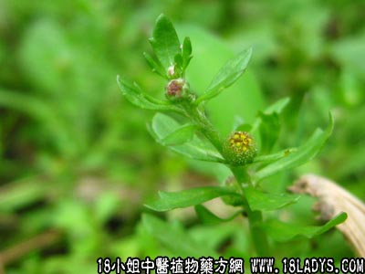

鹅不食(中药材植物名:石胡荽)(植物科目:菊科)

别名：地胡椒。
植物名：石胡荽。
生长环境：本品为一年生，匍匐状，柔弱草本。喜生于稻田中或潮湿之地。
分布：我国南部各省均有。
入药部分：全草。
采集期：夏、秋。
自采地点：田边、湿润地方。
性味：性温、味辛。
功能：通窍、散瘀、解毒、祛风、止痛。
主治、用量和用法：1、鼻渊：干鹅不食草，皂角等分为末，吹鼻内；2、糖尿病：干用5钱，清水煎服；3、疟疾：为末，掺入膏药中心，贴眉心；4、刀伤：为末，掺伤处；5、跌打：干用3～5钱，炖酒服。
（方歌）鹅不食草本领高，跌打刀伤服兼敷，疟疾为患贴印堂，鼻渊糖尿亦能苏。